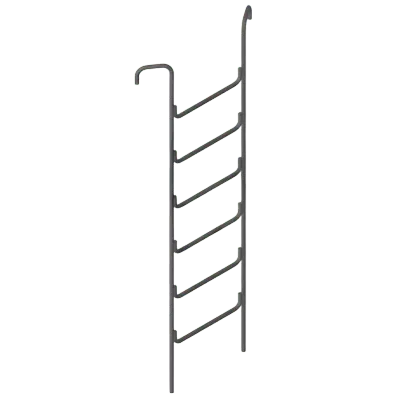

Назначение
Доступ в колодец, обслуживание оборудования, переход между уровнями или рабочая зона.
Типовые проектные решения и изготовление металлических конструкций для доступа, обслуживания и безопасного перемещения на объекте.

Основные направления изделий. В каталоге — отдельные модели и типоразмеры; если готового решения нет, рассмотрим изготовление по вашему заданию.
Для корректного подбора важны условия эксплуатации и параметры места установки. Поможем уточнить исходные данные до расчёта.
Обсудить задачу ↗Доступ в колодец, обслуживание оборудования, переход между уровнями или рабочая зона.
Высота подъёма, ширина прохода, размеры проёма и доступное пространство для монтажа.
Внутри или снаружи помещения, влажность, контакт со средой и требования к покрытию.
Типовой альбом, чертёж, эскиз или техническое задание — подскажем, чего не хватает.

Работаем с типовыми решениями и запросами по индивидуальным чертежам. Согласуем параметры изделия, подготовим расчёт и организуем поставку.
Отправьте запрос — поможем определить подходящую конструкцию и подготовить расчёт.